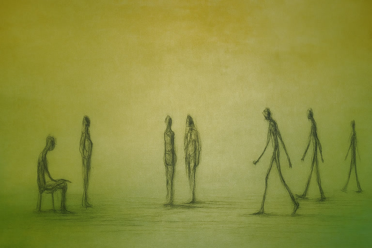
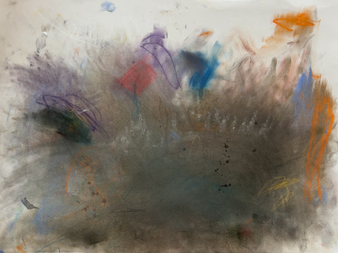
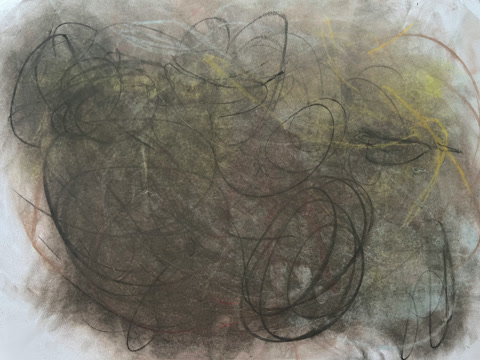
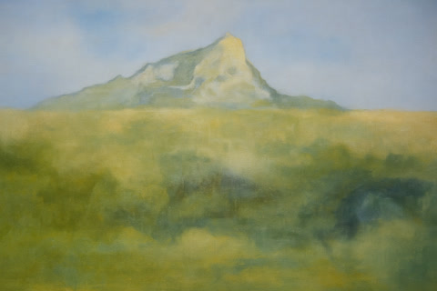
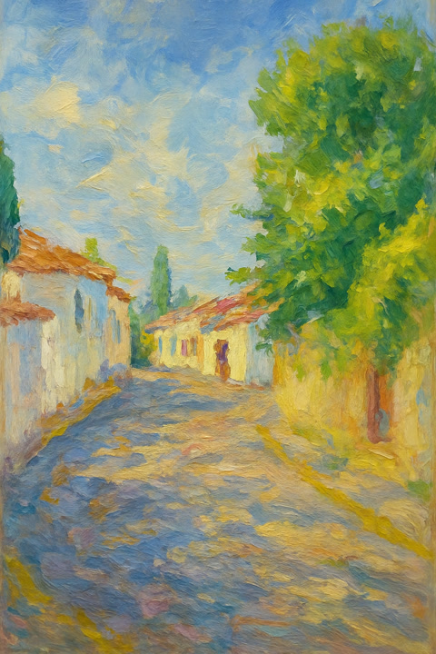
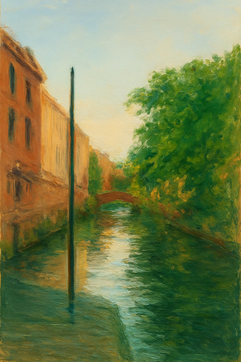
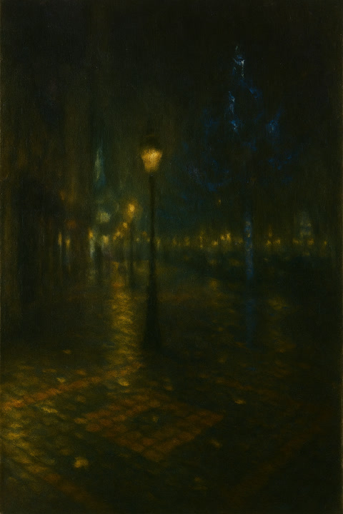

Fine art in oil, watercolour, and pastel
Profile
I paint in oils, watercolours, and pastels, from observation, and into abstraction. I work between London, Hertfordshire, and Bedfordshire.
Away from the easel, I studied mathematics at the University of Warwick and then the University of Cambridge before embarking on a career in data analysis. I volunteer for the RSPB and spend as much time at their reserves as possible.
I'm passionate about progressive, experimental, alternative comedy.
Figures

Green Background with Seven Figures
Abstracts

Composition in Blue with Border

Composition in Red with Border

Composition in Purple

Collaboration with Teo #1

Collaboration with Teo #2
Plein Air

Seascape, 2018

Mont Sainte‑Victoire, after Cézanne

Cjón. de las Tomasas, Albaicín, Granada

Ponte Alda Merini, Milan

Nighttime, Brussels, 2013

Porthmadog, Wales
Still Life

Apple #1

Apple #2